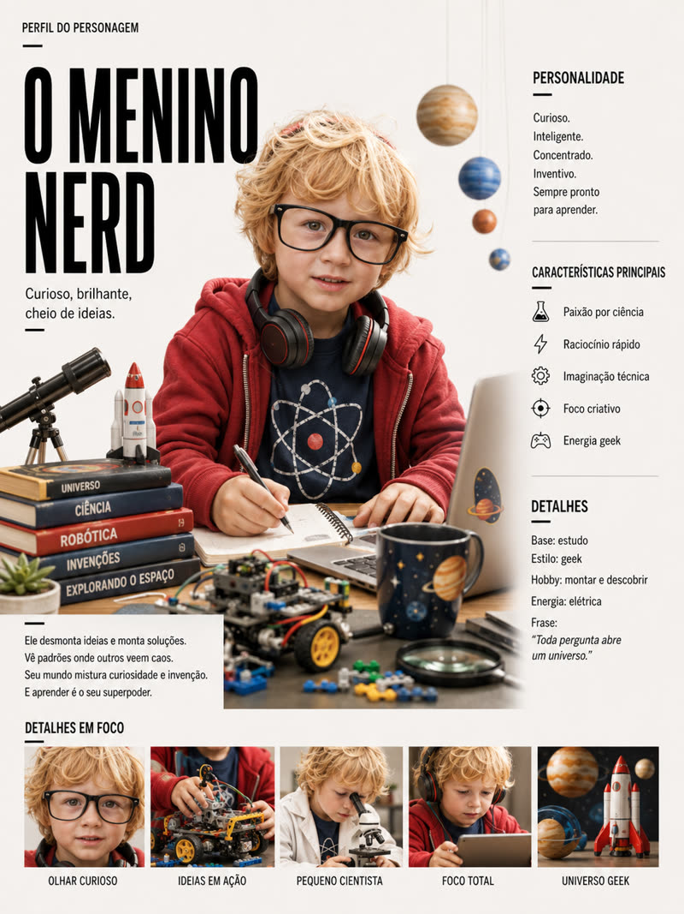
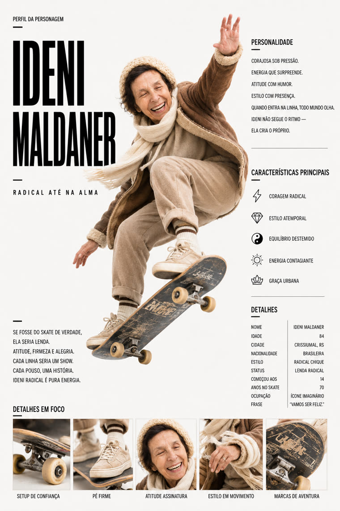
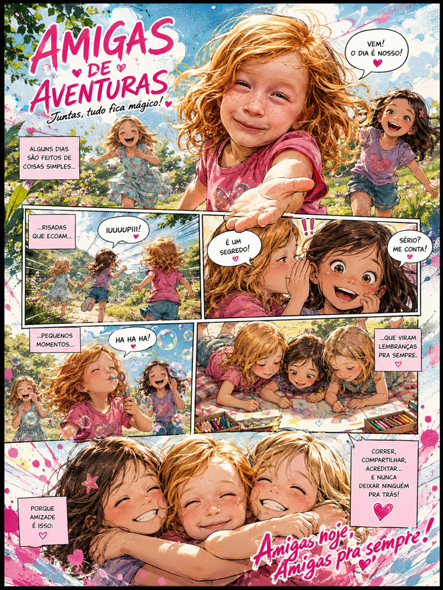
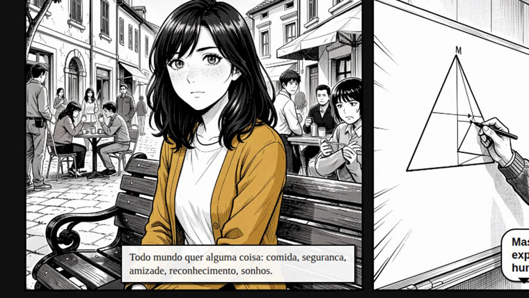
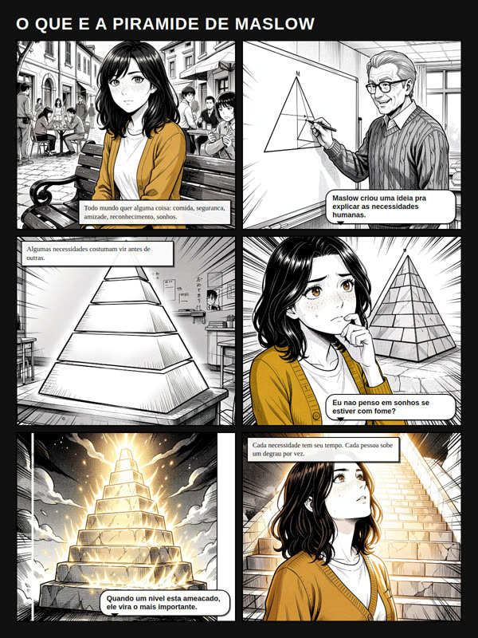

Parto de una foto (o una descripción) y una historia. Los artefactos resultantes mantienen la la misma persona de forma consistente: ficha del personaje → página de cómic → motion comic narrado. Todo local.

Crear cómics con personas reales siempre tropieza con el mismo problema: mantener al personaje igual entre cuadros, páginas y episodios. inemaref aborda la referencia (el model sheet de la persona) como el paso 0 que lo define todo — y la reutiliza en cada artefacto siguiente.
Una ficha (retrato + bio + rasgos + cuadrícula) se convierte en la fuente de verdad del personaje y se mantiene en la página, el video y los episodios.
El motor de imagen genera solo el arte sin texto; la narración, los globos y los SFX son una capa HTML/CSS renderizada, editable y nítida.
Imagen con flux2-klein (inemaimg), voz con inemavox, montaje con ffmpeg/Chromium. Sin nube, sin suscripción.
Tres skills creadas hoy (folder → cómic → motioncomic). La serie y la película vienen después, reutilizando el ecosistema de video de INEMA.
Crea la referencia. La ficha del personaje (retrato + bio + rasgos + cuadrícula) a partir de 1 foto o texto. 2 diseños × 2 artes.
Arma la página. 6 cuadros sin texto (manga en blanco y negro) + globo/SFX/leyenda en capas, con ubicación cuidadosa respecto al rostro. 2 modelos de cuadrícula.
Se convierte en video. Forma A: slideshow narrado. Forma B: la cámara filma la página de papel real y se sumerge cuadro a cuadro.
Servicios locales del ecosistema INEMA. Las skills se comunican con ellos por HTTP; nada va a la nube.
Motor de imagen, en localhost:8000. Genera los cuadros sin texto.
# verificar curl localhost:8000/health
TTS local (voz clonada bella/rachel), en 127.0.0.1:7860. Solo en el motion comic.
# verificar curl 127.0.0.1:7860/health
Renderizado del HTML a PNG y creación del MP4. Python 3 y OpenCV (rostro).
# ejecutar las pruebas for t in skill/*/tests/test_*.py; do python3 "$t"; done
Cada skill es un pipeline de Python que ejecutas desde la raíz del repo. El resultado se guarda en
output/<id>/ (ignorado por git).
Arma una ficha.json (nombre, apariencia reutilizable, 5 enfoques) y genera la ficha del personaje.
python3 - <<'PY' import sys, json sys.path.insert(0, "skill/folder/scripts") from build_folder import build_folder ficha = json.load(open("CAMINHO/ficha.json")) build_folder(ficha, template_dir="skill/folder/templates/editorial-revista", arte="cartoon", modo="texto") # salida: output/<id>/folder.png + referencia.json PY
Un roteiro.json con exactamente 6 paneles (escena sin texto + narración/diálogo/SFX opcionales).
Reutiliza a aparência de la referencia para mantener a la persona.
python3 - <<'PY' import sys, json sys.path.insert(0, "skill/quadrinho/scripts") from build_pagina import build_pagina rot = json.load(open("CAMINHO/roteiro.json")) build_pagina(rot, template_dir="skill/quadrinho/templates/grade-uniforme", # o manga-dinamico arte="manga") # salida: output/<id>/pagina.png PY
Guion con páginas de 6 cuadros. La cámara se abre en la página, se sumerge en cada cuadro durante la narración, se aleja y encaja en el siguiente. Necesita que inemavox esté funcionando.
python3 - <<'PY' import sys, json sys.path.insert(0, "skill/motioncomic/scripts") from build_travel import build_video_travel rot = json.load(open("CAMINHO/roteiro.json")) build_video_travel(rot, voice="bella", arte="manga") # salida: output/<id>/<id>-travel.mp4 PY
Cuando no necesitas la página armada: una imagen a la vez, con zoom y narración en voz en off.
from build_motion import build_video build_video(rot, voice="bella") # salida: output/<id>/<id>.mp4
Fichas y páginas generadas en el pipeline; el frame del motion comic muestra la cámara sumergiéndose en un cuadro de la página de papel.




La base (referencia → página → video) está lista y probada. Lo que sigue reutiliza el ecosistema de video existente.